DASH
Deadlines, Approvals and Signals Hub
User manual · version 1.6.6
Windows · Mac · iPhone and iPad · Android
Windows · Mac · iPhone and iPad · Android
 by TMAC
by TMAC
by TMAC
by TMACPeople who work for clients and on projects today do not lack tools: they have too many. Requests arrive by email, in meetings and in chats; commitments sit in the calendar, in To Do and often only in memory. None of these tools tells you the most important thing: what is slipping through the cracks.
To keep everything under control you have to reread email and chats every day, or fill in yet another list by hand. Often the problem only comes to light when the reminder arrives.
DASH is a small panel, on your computer and on your phone, that helps you keep track of your everyday work. It runs on Windows, Mac, iPhone and iPad and Android. It reads your mail, your calendar, your To Do tasks and, if you wish, your Teams chats, and shows you at a glance:
You do not have to enter anything: DASH works on the data you already have in Microsoft 365. It does not replace Outlook, Teams or your project tools: it works alongside them.
| Today | With DASH |
|---|---|
| A request ends up under other emails | «Mi aspettano» (Waiting for me) and «In ritardo» (Overdue) bring it back into view |
| An approval is stuck | The stuck approvals block flags it after the number of days you choose |
| Nobody has replied to you | The block of what you are waiting for reminds you, and the reminder action prepares the text |
| A meeting’s follow-up does not start | Overdue flags meetings with external people with no email from you to the participants |
| You walk into a meeting unprepared | The prepare action shows what is pending and the latest exchanges in a minute |
| A request gets lost in a chat | DASH also reads Teams and, with AI, recognises implicit requests |
| You do not know where to start your day | At 8:30, a summary of what is pending |
Have you already received an invitation or an installation file? Go straight to the chapter for your device:
| You have | How to install | Read |
|---|---|---|
| Windows PC (10 or 11) | The file DASH-Setup-1.6.6.exe | Chapter 10 |
| Mac with an Apple processor (M1 or later) | The file DASH-1.6.6-mac.dmg | Chapter 11 |
| iPhone or iPad | A TestFlight invitation | Chapter 12 |
| Android phone (7 or later) | The file DASH-1.6.6-android.apk | Chapter 13 |
The rest of the manual is in this order:
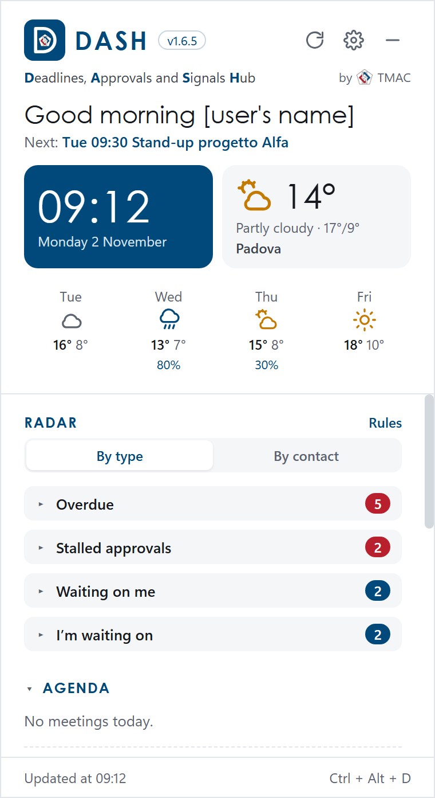
At the top: the icon, the DASH name with its version and, if set, your company logo. On the right, three buttons:
Below: greeting, next meeting, clock and weather.
Then the Radar (chapter 4) and, further down, Agenda (today’s and the next days’ meetings, with «Join» for Teams meetings), Calendar (week or month) and To Do (tick to complete, «▸ note» to read the task’s note, a field to add a new one).
Each section opens and closes when you click its title; DASH remembers your choices.
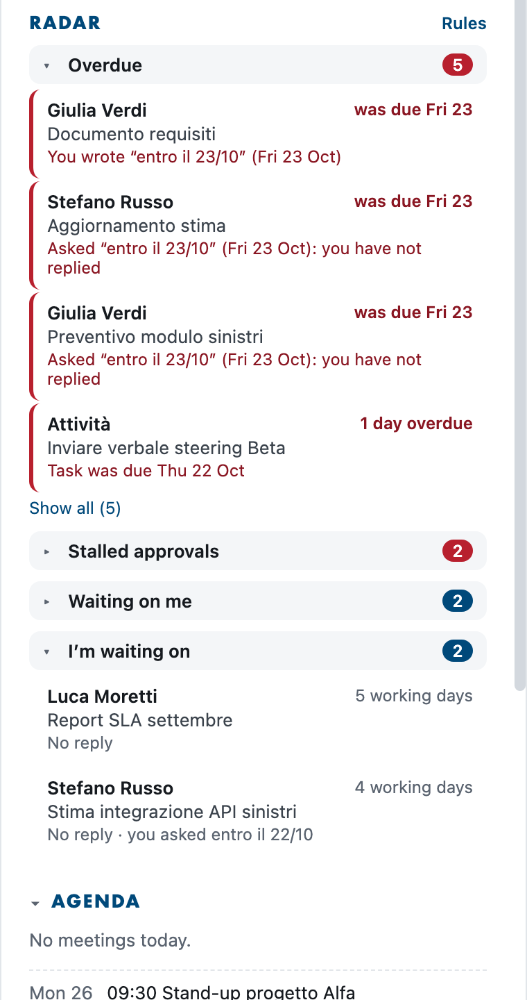
The Radar has four blocks, closed at start-up: the number next to the title tells you how many signals there are (red for «Overdue» and «Stalled approvals»). Click the title to open them.
Each signal shows who, the subject, for how many working days it has been waiting (Saturdays, Sundays, New Year's Day and Christmas Day do not count, nor do the holidays you add in Your public holidays) and a line of explanation. A red border marks what is urgent or past due. Without AI, requests, approvals and deadlines are recognised in Italian, English, German and French, whatever the language of the app.
Click a signal to open it: the full subject and the text appear (the first lines of the email or Teams message, or the note of the To Do task). Click again to close it; to read everything use Open.
Tags: Teams (purple) if the signal comes from a Teams chat; AI if it was read by artificial intelligence.
On the computer, move the mouse over a signal to see the actions; on the phone they are always visible below the signal:
| Action | What it does |
|---|---|
| Reply / Open | Opens the email or meeting in the Outlook app (or the chat in the Teams app). If the app is not there, it opens the web version. |
| Read | Opens the whole signal in a larger window: who, subject, the summary and all the new text of the email or message. “Back to the Radar” closes it. |
| Move to… | Puts the signal in another group of the “By contact” view (see below). The choice also applies to future signals. |
| Follow up | Drafts a polite follow-up that you can edit. «Copy and open in Outlook» copies it and opens the email: paste it into your reply. With AI on there is also «Rewrite with AI». The follow-up text is written in Italian. |
| Resolved | It is done (perhaps in person or by phone): the signal disappears. |
| Ignore | The signal is not relevant: it disappears. |
| Ignore similar | Creates a rule: from now on, emails with the same sender or recipient and a similar subject do not enter the Radar (e.g. a client’s weekly reports). If the subject is too short to recognise similar emails, the rule would apply to all emails from that person: DASH first asks for a second click to confirm. |
| Completed | To Do tasks only: marks the task as completed. |
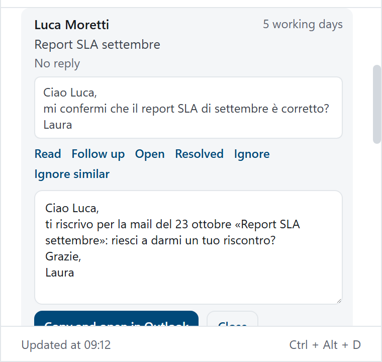
Click a signal to open it: you see the text and the actions. The reminder action prepares a text you can edit and then copy into your reply.
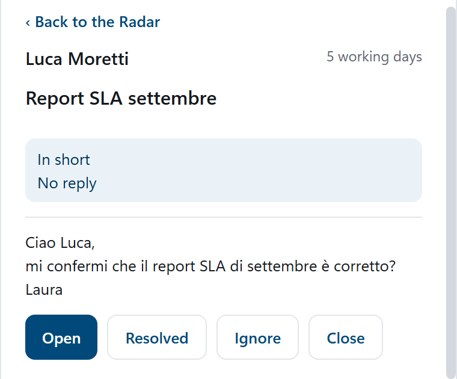
The read action shows the whole signal, with the summary and all the new text of the email or message.
Signals hidden with Resolved or Ignore become visible again if something new arrives in the same conversation. In Radar rules › «Review hidden signals» you can find them and bring one back with «Show again»; «Show them again» brings them all back.
At 8:30 on working days DASH sends a notification, which on Windows stays on screen until you close it. At the top of the Radar, every day from the first update, you find the “Today’s Radar” box: the morning’s pending items, split by block (“Overdue” and “Stalled approvals” open, the others with one click). During the day the box updates itself: what you close stays crossed out with ✓, what arrives later appears with the “new” label, and at the top you see how much you have done (“3 of 9 done”). Click an item to open it; click the title to reduce the box to one line and to open it again. For now the summary text is in Italian. You can turn the summary off in Radar rules.
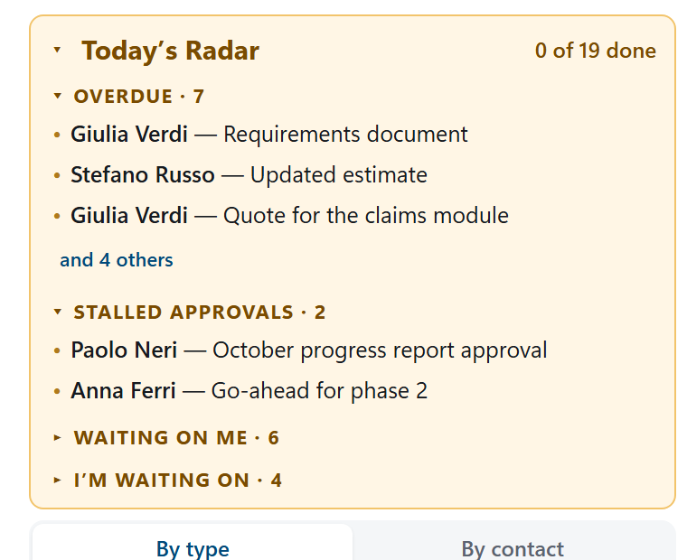
The morning summary box: what is pending this morning, divided by block, with how many you have already done.
At the top of the Radar choose “By type” (the four blocks) or “By contact”. In the second view DASH groups the signals on its own: by company for people writing from outside (from the email domain: alfa-assicurazioni.it becomes “Alfa Assicurazioni”), by person for colleagues and personal mailboxes. Each group says what is pending, for example “Alfa Assicurazioni · 2 waiting for you · 1 overdue”.
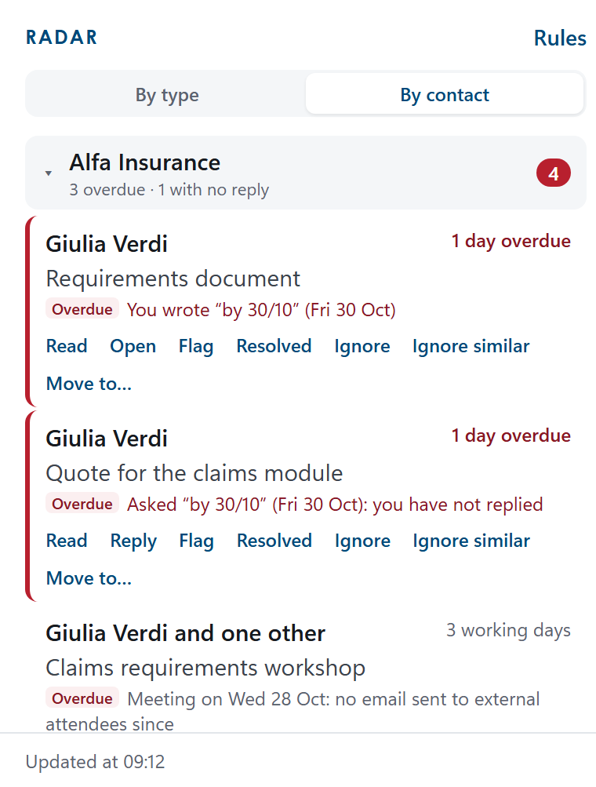
The view by contact: signals grouped by company or person, with what is pending.
Nothing to set up. If a group is wrong, open the signal and use Move to…: type the group name (also a new one, for example “Administration”) and choose whether it applies only to that person or to their whole company. Automatic group goes back to DASH’s suggestion. Your choices sync with your other devices.
An email you flag in Outlook becomes a to-do in the Radar: under “Waiting on me”, or under “Overdue” once the flag’s due date has passed. A flagged sent email goes under “I’m waiting on” as a follow-up. When you mark the flag as complete in Outlook, the signal closes on its own. The “DASH: importante” category brings an email into the Radar even if a rule would exclude it; “DASH: ignora” does the opposite.
With Flag emails from DASH turned on (chapter 5), signals show Flag and Complete: the flag is set and completed in Outlook too.
In the Agenda, next to meetings with other people, there is Prepare. It opens a card you can read in a minute: what is pending with the participants (also with their colleagues at the same company) and the latest exchanges of the last two weeks, each one opens with a click. With artificial intelligence on, 3 summary lines also appear at the top: the AI only receives subjects and details, never the text of emails.
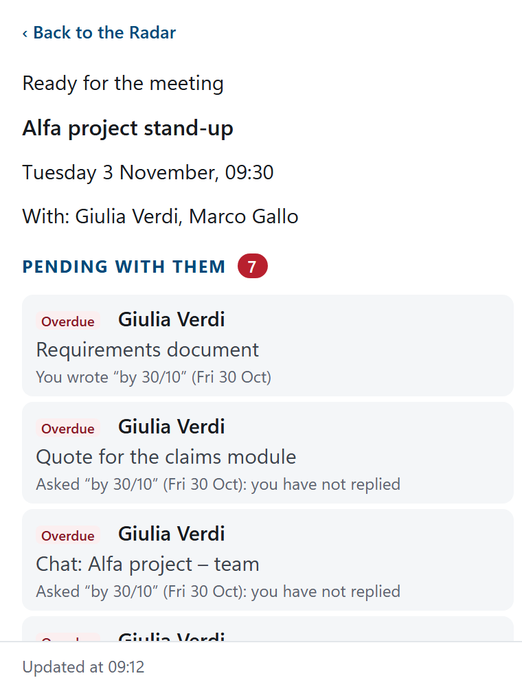
The meeting preparation card: what is pending with the participants, then the latest exchanges.
15 minutes before (Windows and Mac only) the meeting a notification arrives: click it to open the card. You can turn the reminder off in Radar rules.
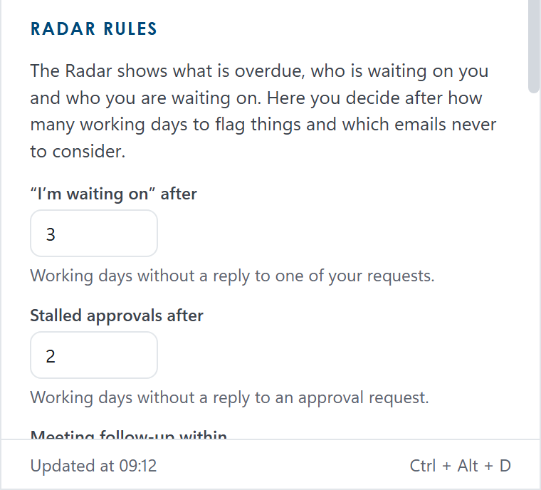
Open them with Rules, at the top right of the Radar.
15/08 applies every year, 24/12/2026 only once. In the DASH calendar these days, New Year's Day and Christmas Day are shown in red.Each rule has two fields; if you fill in both, both must match:
name@client.com) or a domain (client.com, subdomains included);Example: From/to client.com and Subject report, weekly export leaves out that client’s reports, but not their other emails.
At the bottom of the panel, Excluded in the last update (click to open) lists the emails left out and the reason: useful to check that your rules do what you want. Left out because they do not look like requests lists the emails addressed to you that DASH did not treat as requests, starting with those containing a deadline or an approval. Remember to click Save.
With Also read Microsoft Teams on (Radar rules), DASH also considers:
The first time, DASH may ask you to sign in again: Microsoft must confirm the Teams permissions. If Teams cannot be read, a red line «Teams cannot be read» with the reason appears under the Radar title.
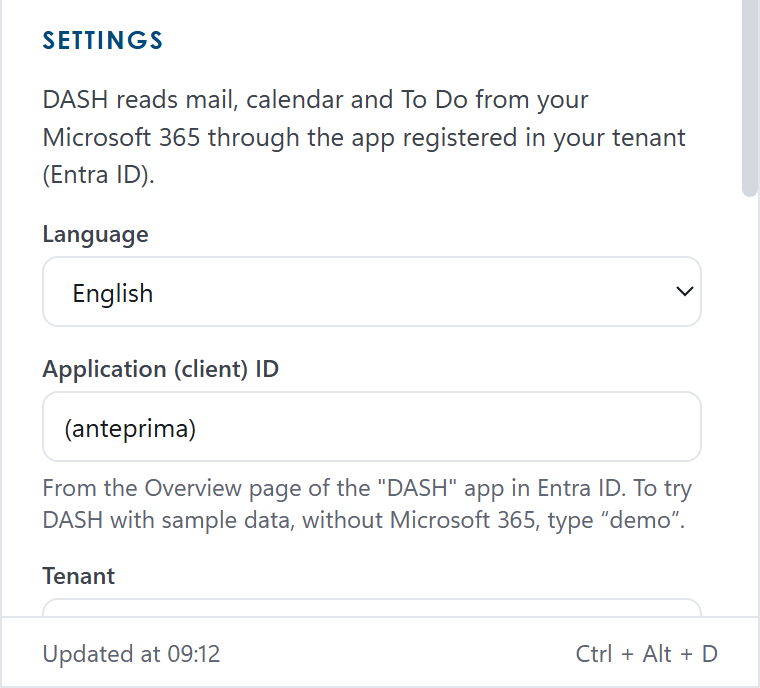
If you use DASH on several devices (for example your PC and your iPhone), turn on Sync with your other devices on each of them. From then on they share:
What stays on each device: Client ID and Tenant, the language, the Anthropic and OpenAI keys, the keyboard shortcut, starting with Windows, the logo and the AI costs. Sync happens at every update and a few seconds after each of your actions; the time of the last sync appears under the checkbox. Rules on emails not to consider that are added on different devices are combined, and those removed stay removed; for the other values in the Rules the last change wins.
The data is kept in a file in a folder reserved for DASH in your OneDrive (Apps › DASH): do not move or edit it. The first time, DASH may ask you to sign in again, because Microsoft must confirm the permission for that folder.
These are done once only, for the whole organisation, before installing the app. If you are not the administrator, you can skip to the chapter for your platform.
DASH reads data from your organisation’s mail server. Today the supported platform is Microsoft 365 (Outlook, calendar, To Do and Teams); when other platforms become available, their instructions will be in this chapter.
DASH uses an app registration in Entra ID with delegated permissions: each person sees only their own mailbox, and data travels only between users’ devices and your organisation’s Microsoft 365 (TMAC receives nothing). Each organisation uses its own tenant and, for artificial intelligence, its own Copilot licence or Anthropic or OpenAI key.
Once for the whole organisation, the administrator registers DASH in your tenant as follows and gives users the Client ID and Tenant (or the domain name), to be entered at the first start.
https://entra.microsoft.com › Identity › Applications › App registrations › New registration.http://localhost. Register.| When | Permissions |
|---|---|
| Always | User.Read, Mail.Read, Calendars.Read, Tasks.ReadWrite, offline_access |
| With Teams on | Chat.Read, Team.ReadBasic.All, Channel.ReadBasic.All, ChannelMessage.Read.All |
| With sync between devices | Files.ReadWrite.AppFolder (only the DASH folder in the user’s OneDrive, Apps › DASH) |
| With the Copilot engine | Sites.Read.All, People.Read.All, OnlineMeetingTranscript.Read.All, Chat.Read, ChannelMessage.Read.All, ExternalItem.Read.All (all required by the Microsoft 365 Copilot Chat API) |
| With “Flag emails from DASH” | Mail.ReadWrite (only to set and clear the Outlook flag; DASH never deletes or sends email) |
After adding them: Grant admin consent for the organisation. Teams, Copilot and sync permissions are requested from users only if they turn those features on.
For the iPhone app: in Authentication also add the iOS / macOS platform with Bundle ID it.tmac.dash.
For the Android app: in Authentication › Add a platform › Android enter the package name it.tmac.dash and the signature hash Tvy2xt5sIIb4Hyur+URCnvo+YmQ= (the .apk file distributed by TMAC is signed with that key).
If you want to use AI, choose the engine on each device, or on one device with sync turned on (chapter 7). The permissions for Copilot are in chapter 8.
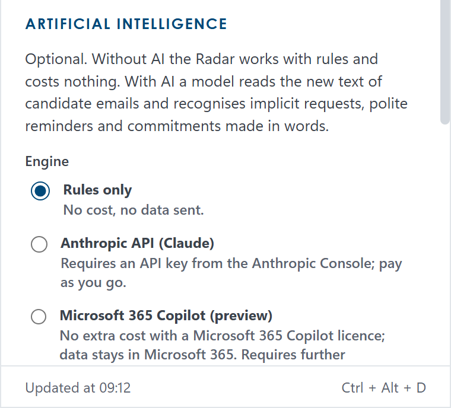
It is optional: without AI the Radar works with rules and costs nothing. With AI a model reads the text of candidate emails and messages and recognises implicit requests, polite reminders and commitments made in words; it also writes the follow-ups.
Open it from Settings › Artificial intelligence… Choose the Engine:
Maximum emails read per day is a safety limit (150 by default); each email is read only once. With Anthropic and OpenAI you must also tick the authorisation to send the data, on each device: without it no data is sent and the Radar works with its rules. You withdraw it by unticking the box or choosing “Rules only”. The box below shows how many emails were read today and, for Anthropic and OpenAI, the estimated cost for the month. The texts written by the AI (summaries, follow-ups) are in Italian for now.
Read only the chapter for your platform, then the first sign-in.
You need a PC with Windows 10 or 11 and the file DASH-Setup-1.6.6.exe.
DASH-Setup-1.6.6.exe.DASH behaves like a widget: it sits on the desktop and, when you click another window, it moves behind the other apps. It has not closed: to bring it to the front use the shortcut Ctrl + Alt + D, or click the DASH icon in the notification area (next to the Windows clock), or show the desktop (Win + D).
Right-clicking the icon in the notification area opens a menu with Aggiorna ora (refresh now), Impostazioni (settings), Avvia con Windows, Ripristina posizione (reset position), Esci dall'account (sign out) and Chiudi DASH (close DASH). For now this menu is in Italian only.
%APPDATA%\DASH folder: delete it if you want to remove everything.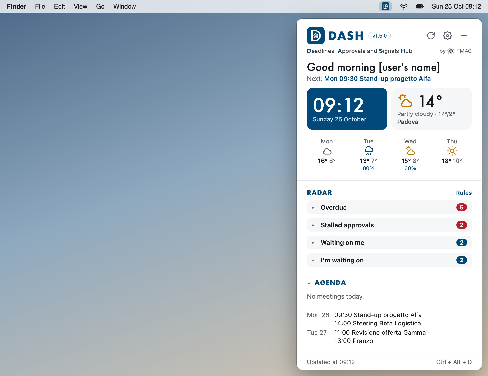
On the Mac DASH is the same program as on Windows. You need a Mac with an Apple processor (M1 or later): this version does not open on Macs with an Intel processor.
DASH-1.6.6-mac.dmg.Command+Shift+D..dmg file and drag DASH onto Applications, choosing Replace. Settings, rules and sign-in are kept.~/Library/Application Support/DASH: delete that folder if you want to remove everything.For now DASH for iPhone and iPad is installed with TestFlight, Apple’s app for test versions.
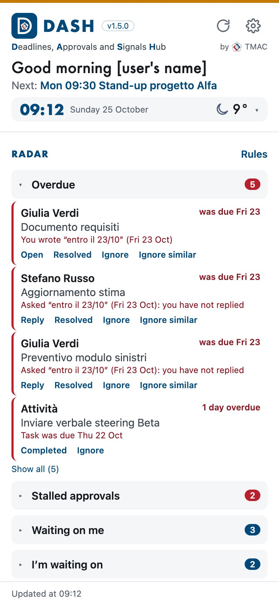
The interface, the Radar, the rules and the artificial intelligence are the same as on the computer. This is what changes:
dash.tmac.it/assistance.html.If you also use DASH on another device and want the same rules, hidden signals and AI analyses, turn on Sync with your other devices on both (chapter 7).
First sign out and, if you entered an AI key, use “Remove the key”. Then touch and hold the DASH icon on the Home Screen › Remove App › Delete App.
On Android phones DASH is the same app as on iPhone, and Android 7 or later is required. What is specific to the phone is in chapter 12 (“What is specific to the phone”), including the two columns with the phone in landscape or on open foldables.
For now DASH for Android is not on the Play Store: you install it from the file DASH-1.6.6-android.apk, which you receive by email, OneDrive or Teams.
.apk file over the old one: settings, rules and sign-in are kept.First sign out and, if you entered an AI key, use “Remove the key”. Then touch and hold the DASH icon › Uninstall.
The first sign-in is the same on all devices. On the phone, where you read “click”, tap.
company.com, or the directory ID). Click Save.demo in the Application (client) ID field (no Tenant needed), click Save and then Sign in. DASH shows sample data, in the app’s language, with the “Demo mode” bar always visible; it doesn’t connect to Microsoft and doesn’t touch your data or rules. To leave: Leave demo, or clear the field or enter your Client ID.| What you see | What to do |
|---|---|
| You do not have a Client ID and Tenant | Ask your organisation’s Microsoft 365 administrator and forward them chapter 8. To try DASH right away, type demo instead of the Client ID. |
| «Session expired: sign in again.» | Click Sign in and sign in again with your account. It happens after a password or permission change. |
| «Admin approval required» at sign-in | The Microsoft 365 administrator must grant consent to the DASH app (chapter 8). |
| «Teams cannot be read» in the Radar | Teams permissions are missing: tell your administrator. You can turn off Teams in the Rules. |
| «AI: error» at the top of the Radar | Move the mouse over it to read the reason. Copilot: requires the Microsoft 365 Copilot licence and permissions; Anthropic and OpenAI: invalid key or no credit left. |
| Under «Sync…»: «OneDrive denies access» | The Files.ReadWrite.AppFolder permission is missing: tell your administrator (chapter 8), then sign out and sign in again. |
| A wrong signal that keeps coming back | Use Ignore similar, or a rule or an Outlook category. |
| A signal you expected is missing | Check «Excluded in the last update» and «Left out because they do not look like requests» in the Rules; remember that DASH looks at the last two weeks and only at Inbox and Sent Items. If you receive a very large amount of email, the Radar warns you when it has read only the latest messages. |
| What you see | What to do |
|---|---|
| DASH «has disappeared» or seems closed | It is behind the other windows: Ctrl + Alt + D or click the icon in the notification area. If the icon is not there, start it from the Start menu. |
| On the Mac DASH «has disappeared» | Click the D in the menu bar at the top right, or press ⌃ ⌥ D. |
| The Mac will not open DASH | System Settings › Privacy & Security › Open Anyway (chapter 11). This version does not work on Macs with an Intel processor. |
| A message saying the shortcut is already used by another program | Choose another shortcut in Settings (e.g. Control+Alt+Shift+D). |
| What you see | What to do |
|---|---|
| The 8:30 summary does not arrive | In the phone’s settings allow notifications for DASH, and check that the summary is on in the Radar rules. |
| In the morning the signals are not up to date | This is normal: the phone only refreshes with the app open. Open it and wait a moment; with AI it can take a couple of minutes. |
| TestFlight says the version has expired | Open TestFlight and tap Update on DASH. If there is no new version, write to whoever invited you. |
DASH · Deadlines, Approvals and Signals Hub · version 1.6 · by TMAC — Where experience matters!